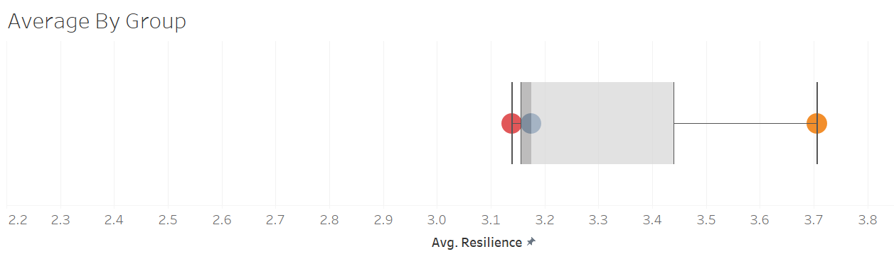

The Impact of Stress, Sleep, Age, Time Management, and Growth Mindset
Resilience & COVID-19
Brandon Purvis 1, 
purvisb@spu.edu
Kait Hemphill 2
khemphill@spu.edu
1 Department of Industrial-Organizational Psychology, Seattle Pacific University
2 Department of Industrial-Organizational Psychology, Seattle Pacific University
Introduction
COVID-19 stay at home orders have offered powerful opportunities to study resilience. The highly stressful conditions brought by the pandemic allows us to consider the extent to which people are adopting new habits. Resilience is defined as not merely surviving adversity, but bouncing back, growing from it, and increasing one’s capacity to face future challenges (Bonanno & Diminich, 2013; Smith et al, 2008).The resilience practices considered Time Mangement (Carver, 1997), Growth Mindset, (Carver, 1997; Dweck, 2006) and Sleep (Marinus et al., 2003). We will consider these practices alongside perceived stress (Cohen et al., 1983).
Objectives
- Explore the relationship between Stress, Sleep, and Resilience.
- Explore resilience practices by age groups: Young Adult (20-34), Adult (35-49), Senior (50-76)
- Discuss practical applications for maintaining Resilience through Stressful circumstances.
Data + Measures
Participants were reached via Prolific and received $2.00 compensation upon completion of a 15-20-minute survey. Participants (N = 500) were required to be at least 20 years old. The sample was 54.6% male and 44.6% female, and 1.6% other, ranging from 20 to 76 years old (M = 36.22, SD = 12.50). Data was cleaned in R.
Resilience: 6-item scale called the Resilience Assessment Brief (Smith et al., 2008). Coping Skills: Growth Mindset & Time Management: Brief COPE scale developed by Carver (1997) with adaptations (Dweck, 2006) Stress: 5-item questionnaire (Cohen et al., 1983). Sleep: 2 item scale measuring quality and habits, adapted from the SCOPA (Marinus et al., 2003).
Methods & Results
The regression equation used in analyses is as follows. Simple and Multiple heirarchical regression is used to determine the realtionships between variables, and to see the change in R squared.
\[ \hat{Y}=b_0+b_xy x \]
\[ \hat{Y} = b_{0}+b_{y1.2}x_{1} + b_{y2.1}x_{2} \]

Figure 1: Scatterplot: Stress and Resilience
- Resilience and Stress: the more stress you have, the less resilience you would be.

Figure 2: Scatterplot: Sleep and Stress
- Stress and Sleep: at low levels of stress, we would expect more and better sleep.

Figure 3: Scatterplot: Sleep and Resilience
- Resilience and Sleep: the more/better sleep you have, the more resilience you tend to have.
Correlations
Lets consider a few Correlations between Resilience, Stress, Age and three resilience Practices: Time Management, growth Mindset, and Sleep.
Figure 4: Correlations for Sleep, Stress, Growth Mindset, Time Mgmt, and Resilience
Stress is inversely correlated with age (red), yet age is positively correlated with everything else, suggesting that age is changing the relationship between stress and the other variables. Lets attempt a model.

Figure 5: The impact of stress on resilience by age group
As age goes up stress goes down. As stress goes up, all the other varaibles does down. Age is acting similarly to all other variables. Interestingly, Adults and Seniors have a pull up at the end indicating a curvilinear relationship. Data points are limited for high stress, which increases error in our predictions at the high level.
Difference Across Age Groups

Figure 6: Resilience by Young Adult, Adult and Senior

Figure 7: Sleep by Age Category: Young Adult, Adult and Senior
Tableau Comparison
Comparing the Violin plot to the box plot in Tableau’s program we see that the box plot is somewhat limiting. With the violin plot, we not only see the means by age, we also see the distribution of the age category by density.

Which resilience practices are used by each age group?
Figure 8: A Tableau Comparison

Figure 9: Resilience Practices Used by Age Group
Discussion
- Stress heavily impacts our ability to maintain resilience.
- Stress and Resilience differ by Age. Young adults experience more Stress than adults and seniors.
- Growth Mindset and Time Management differ by age as Adults and Seniors more readily adopt a growth mindset, whereas young adults tend not to.
- Having a Growth Mindset under stress, across all ages, predicts reslience.
Application
- One might consider reframing during negative circumstances - trying to look for something good in what is happening.
- Look for ways to “bounce back” from any setbacks and grow from any experiences you may be having.
- Have a “next time” mentality - if something doesn’t go your way this time, don’t give up, instead think - “I’ll get it next time around.”
Lessons Learned
What Went Well: (1) In order to do quality visualizations, we had to sacrifice a continuous variable and convert it to categorical. Statistically, we wouldn’t want to do that, but it made for a better representation visually. (2) Creating the age category ended up giving us some interesting insights as far as how different age groups practice resilience and manage stress.
What Did NOT go Well: (1) • The animation portion was challenging to implement in R and on the poster. (2) Standardizing variables is often a necessity when Likert scaling varies within scales. We were forced to standardize sleep, and it then became apparent that we needed to standardize all of them for specific visualizations.
What Would you do Differently Next Time: (1) I would pick uniform scaling in the initial steps of the survey to avoid z-scoring. (2) I would consider a wider range of resilience practices. The study we are doing has 9 resilience practices, and I wish we could have evaluated all of them.
For references See write up.